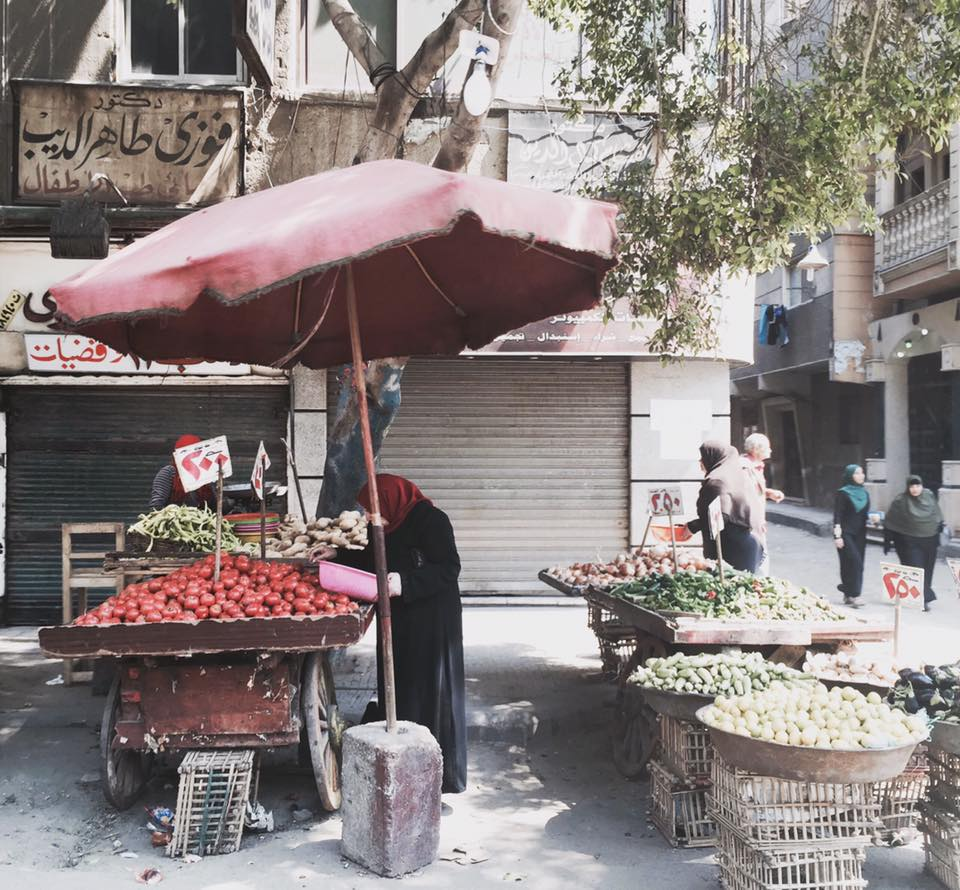

I became interested in meditation when I lived in Thailand. I attended a ten day silent meditation retreat, and have been an avid practicer ever since. I find meditation to be a great way to relieve stress, anxiety, and tension.
I am also interested in the benefits from yoga. It has also helped me to relieve stress and anxiety, as well as helping my body to become more flexible and less stiff. I have been able to do things with my body that I never thoguht I could do before. I hope that I can still do a headstand when I'm 60 years old.
Jewelry making is a new hobby I started a few months ago. I enjoy creating things with my hands, and have admired many different styles of jewelry throughout history and my travels. It is a hobby that teaches me patience, and I get to give them away as gifts for birthdays and holidays.
Travel is a hobby and an interest. I hope to travel to half of the countries in the world before I die. I am currently half way there with 49 countries.
Here are some of my favorite photos I've taken.
